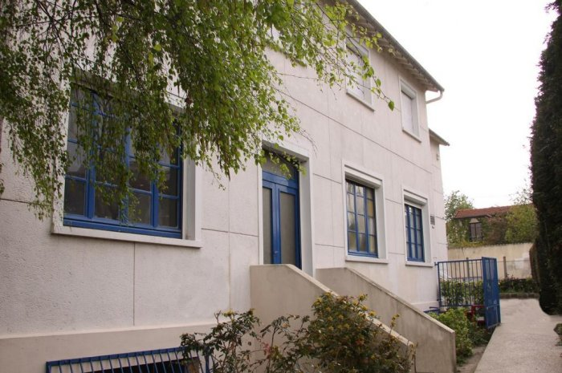
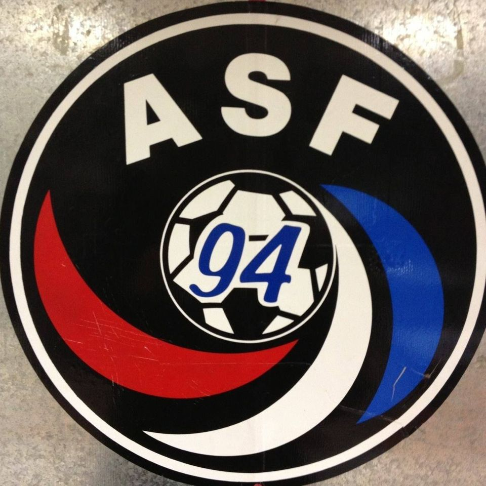
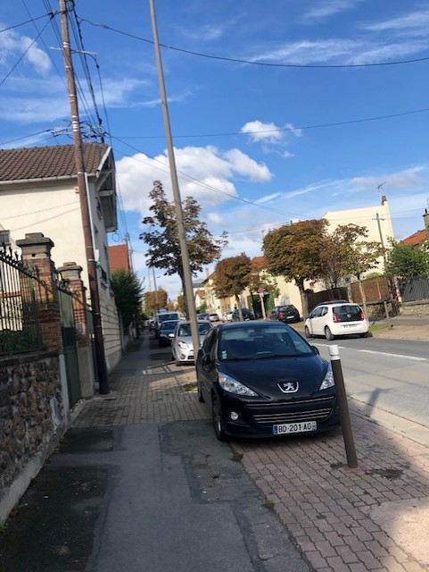

Brève presentation
Bonjour a tous ! Moi c'est Rubens, j'ai 19ans, je suis ne le 24 aout 2001, dans la petite ville de nogent sur marne, une petite ville de l'agglomeration parisienne. J'ai commence ma scolarite dans une maternelle situee non loin de mon lieu de naissance, au Perreux sur marne, egalement plutot proche de Paris. Pour ce qui est de ma primaire, je l'ai passe a Notre Dame de toute grace, au Perreux sur marne dans le 94.
Lorsque j'ai eu l'age d'arriver au college, je me suis rendu a Henri Matisse, a montreuil dans le 93, j'ai egalement realise toute la duree de mon lycee dans cet etablissement car l'environnement m'y etait favorbale. Regardez moi cette belle entree, elle me rappelle tant de souvenirs..
Useful links:
-
Mon collège
Je vous annonce rapidement que je suis fan du foot, et que tout naturellement mon enfance a ete bercee par ce sport, que j'ai commence a pratiquer au Perreux sur marne, meme lieu que mon ecole primaire et de ma maternelle. 
Ecusson de mon ancien club de foot Photo tiree du Facebook public du club - Mon ancien club de foot
Ma vie actuelle
Aujourd'hui, du haut de mes 19 ans, j'ai encore plein de reves, plein d'ambitions, plein de vie. J'ai un attrait particulier pour le voyage, ou que ce soit, je ne suis pas la personne lambda qui aime le voyage pour aller aux Maldives, je veux dire, tout le monde aime le voyage si c'est pour aller aux Maldives. Moi, j'aime tout simplement decouvrir, que ce soit une langue, une culture, un mode de vie different du mien.. j'aime et je veux apprendre.
Je mene une vie paisible, je vis dans cette petite rue que vous pouvez voir ici.. 